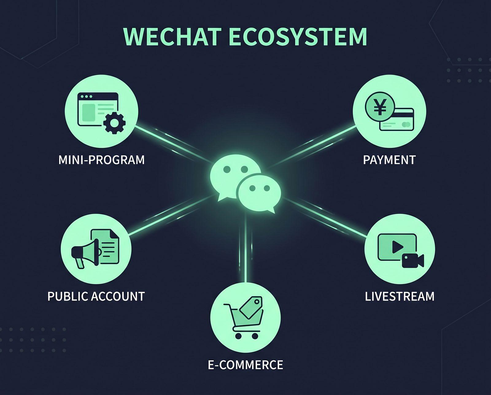

Our Solutions
4つの業界特化型ソリューション
ビジネスモデルや業種に最適な機能を備えたミニプログラムを受託開発し、業務自動化と顧客獲得を同時に達成します。
スマートモバイルオーダー
（飲食・レストラン・多店舗チェーン向け）
来店客がテーブルのQRコードをスキャンして自身のスマートフォンから中国語メニューを表示・注文・決済（WeChat Pay）できるフルセルフシステム。中国語対応スタッフの不足をカバーし、客単価と回転率を劇的に向上させます。
- • 多言語対応（簡体字・繁体字・日本語） & シズル感を追求した画像配置
- • テイクアウト（事前注文・受け取り時間指定）機能
- • 厨房プリンター・キッチディスプレイ（KDS）とのシステム連携
スマート直販・予約システム
（ホテル・リゾート・体験型施設向け）
OTA（オンライントラベルエージェント）を介さず、ユーザーがWeChat内で客室やサービスをダイレクトに検索・空室照会し、リアルタイム予約・事前決済できるシステム。自社直販比率を高め、高額な代理店手数料を削減します。
- • 写真や動画による客室設備・体験ツアーのパノラマビュー
- • アメニティ追加や貸切風呂などのアップセル連動
- • 来館時のチェックイン支援機能 & スマートキー（デジタル鍵）連携
越境コマース・スマート小売
（メーカー・コスメ・アパレル・土産店向け）
WeChat内で動作する独立型Eコマース（EC）ミニプログラム。旅先での体験をもとに、帰国後も再購入（リピートEC）できる仕組みを構築。WeChat Payによるスピーディな海外決済と国際物流管理システムをスマートに融合します。
- • 海外クレジットカード、国際宅配システム、税関データ連携
- • WeChat動画アカウント（ビデオチャネル）とのライブコマース連携
- • 期間限定割引、共同購入（グループ購入）、フラッシュセール機能

デジタル会員・CRM・プッシュ配信
（リピーター獲得・ロイヤルティ向上）
店頭で簡単に登録できるデジタル会員証システム。顧客属性や購買行動履歴に応じたパーソナライズプロモーションを行い、WeChatのプッシュ通知機能（サービスメッセージ）を用いて休眠顧客へ直接アプローチできます。
- • スマホから即時入会・ポイント蓄積・会員ランク設計
- • WeChatのソーシャル性を活かした「お友だち紹介クーポン」配布
- • 通知許諾を得たユーザーへのイベント通知・限定情報のプッシュ配信
